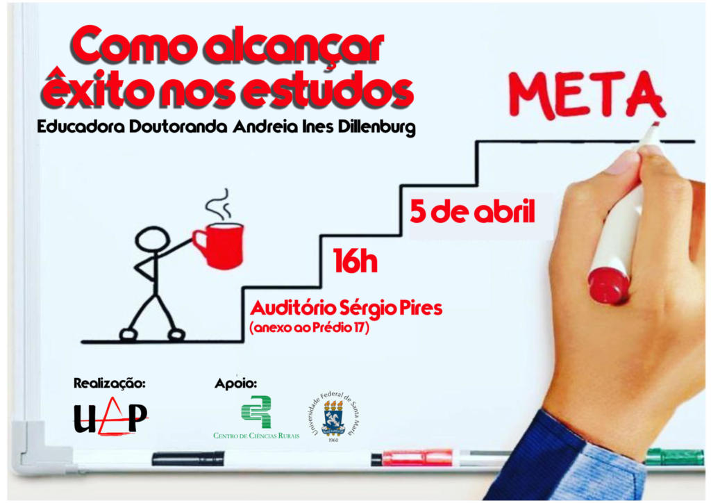

Metas
Defina e acompanhe suas metas de estudo.
Cadastro e acompanhamento de metas de estudo semanais/mensais.
- Meta semanal: 10 horas
- Meta mensal: 40 horas
- Matérias: Matemática, Inglês, História, Química, Física
- Progresso: 75%
- Próxima meta: 15 horas na próxima semana
Histórico
Visualize seu histórico de estudos.
Registro e visualização das atividades realizadas.

- 20/08/2025 - 2h de Matemática
- 19/08/2025 - 1h de Inglês
- 18/08/2025 - 1h 30min de História
- 17/08/2025 - 1h de Química 16/08/2025 - 2h de Física
Insights
Obtenha insights sobre seus hábitos de estudo.
Visualização de dados e estatísticas para melhorar o desempenho.
Análises e gráficos para ajudar na evolução dos estudos.
Dica: Estude um pouco todos os dias para melhores resultados!

- Melhor dia: Terça-feira
- Melhor horário: 19h - 21h
- Matéria mais estudada: Matemática
- Progresso mensal: 75%
- Progresso semanal: 80%
- Tempo médio de estudo: 1h 30min
- Taxa de conclusão de metas: 90%